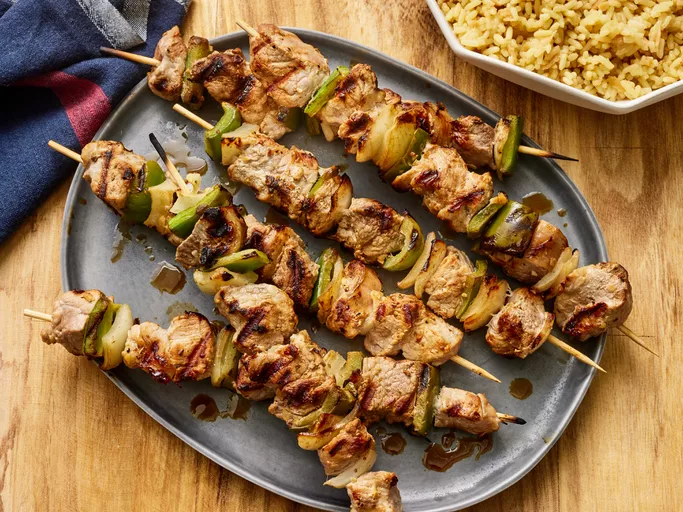

Souvlaki

Description
Souvlaki is a Greek specialty made with tender cuts of meat. In this recipe, pork tenderloin is marinated in a lemony mixture of olive oil and oregano.
Ingredients
- ¼ cup olive oil
- ¼ cup soy sauce
- 1 medium lemon, juiced
- 3 cloves garlic, crushed
- 1 teaspoon dried oregano
- 3 pounds pork tenderloin, cut into 1 inch cubes
- 2 medium yellow onions, cut into 1 inch pieces
- 2 medium green bell peppers, cut into 1 inch pieces
- skewers